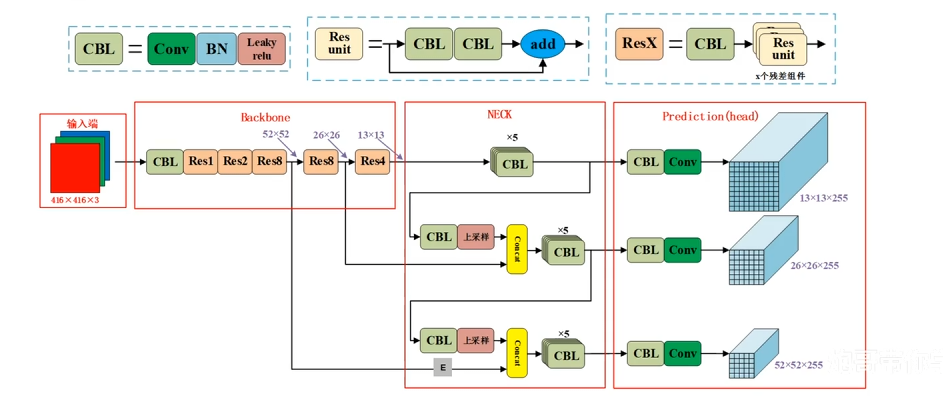
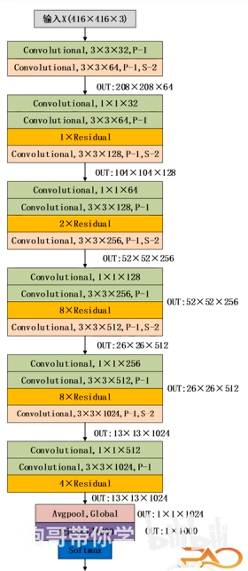
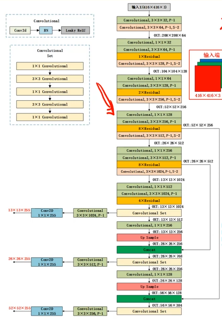
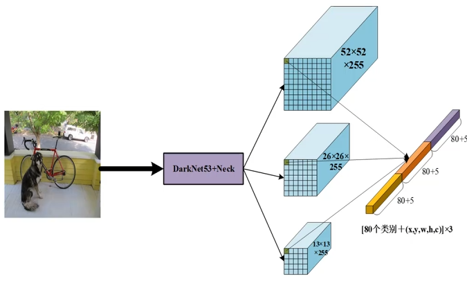

# YOLOv3
# 原文
YOLOv3: An Incremental Improvement(YOLOv3): [https://arxiv.org/abs/1804.02767]
# 网络结构

在检测头，他这个数值标错了。

他这个用步幅为 2 的卷积带代替池化操作了，可以看到他又把全连接拿回来了。

# 图像金字塔 FPN

特征金字塔网络 FPN，这是它相比 YOLOv2 最重大的改进之一。这一设计极大地提升了模型对多尺度目标尤其是小目标的检测能力。
YOLOv3 在主干网络 Darknet-53 的基础上，提取了三个不同跨度的特征图进行预测：
- 13×13 输出层： 对应深层特征，感受野最大，负责检测大尺寸物体。
- 26×26 输出层： 对应中层特征，负责检测中等尺寸物体。
- 52×52 输出层： 对应浅层特征，感受野较小，负责检测小尺寸物体。
为了让浅层也拥有深层的语义信息，YOLOv3 执行了以下操作：
- 上采样： 将 13×13 的特征图通过上采样放大 2 倍，变为 26×26。
- 拼接： 将上采样后的特征图与 Darknet-53 中对应的 26×26 原始特征图进行通道拼接，原始 FPN 是逐元素相加，而 YOLOv3 是沿通道维度的 Concat，这点非常重要。
- 循环操作： 同样的逻辑也应用在 26×26 到 52×52 的过程中。
在深度学习的特征融合中，主要有两种方式：Add 逐元素相加 和 Concat 通道拼接。YOLOv3 的 FPN 结构明确使用了 Concat。
上采样后，对于原始格子来说相当于变多了，这意味这感受野下降，但更聚焦于小目标。
# 为什么要用 Concat 而不是 Add？
Concat 不会改变原始特征图的数值，它只是把深层的 “语义信息” 和浅层的 “位置信息” 放在一起，交给后面的卷积层去自动学习如何加权利用。通过增加通道数，网络可以同时看到来自不同尺度的特征表达。
# 好像 U-Net？
YOLOv3 的 FPN 构建了一个类似的流程：
- 左侧下采样 / 编码器：在 YOLOv3 中是 Darknet-53 主干网络，负责提取特征。
- 右侧上采样 / 解码器：YOLOv3 通过上采样不断恢复分辨率。
- 中间使用跳跃连接：两者都将左侧的特征图直接传递到右侧，与上采样后的特征进行 Concat。
# Concat
在 YOLO 里，这个 Concat 本质上就是堆叠通道
| 上采样后的高层特征: (B, 256, 26, 26) |
| 浅层特征: (B, 256, 26, 26) |
| ---------------------------------- |
| Concat(dim=1) |
| ↓ |
| 输出特征: (B, 512, 26, 26) |
# 检测头

如上图所示，YOLOv3 一共有 9 个 Anchor，但在每一个预测层上，它只使用其中的 3 个。
| 预测层尺度 |
负责目标 |
分配的 Anchor 数量 |
说明 |
| 13×13 |
大物体 |
3 个 |
感受野大，适合抓大个子。 |
| 26×26 |
中物体 |
3 个 |
兼顾语义和细节。 |
| 52×52 |
小物体 |
3 个 |
分辨率高，专门抓细小目标。 |
如果只说聚类出来的，为什么不聚类成 6 个或 12 个？我想这是经验科学与计算效率妥协的结果。
YOLOv3 的特征金字塔有 3 个输出层。为了保证模型的对称性和代码实现的简洁性，作者给每个层分配了相同数量的 Anchor。如果每层只给 1 个 Anchor，覆盖的形状太少，如果每层给 5 个，总共 15 个，模型最后一层的通道数会变得非常臃肿，推理速度大幅下降。也可能是超过 9 个以后，准确率的提升已经微乎其微，但计算量却在持续线性增加，这是覆盖率的边际效益。
# 重提 x,y,w,h,c
| 字母 |
全称 |
含义 |
| x,y |
Coordinates |
预测框的中心点坐标相对于当前格子的偏移量。 |
| w,h |
Width / Height |
预测框的宽度和高度相对于 Anchor 尺寸的缩放比例。 |
| c |
Confidence |
置信度，代表这个框里 “有物体” 的概率以及框得 “准不准”。 |
# 损失函数
Loss=Losscoordinate+Lossconfidence+Lossclassification
Coordinate Loss 坐标损失 ：这部分负责让框画得更准。它只针对正样本计算。统一使用 BCE Loss。
Confidence Loss 置信度损失：这部分负责判断 “有没有物体”。它是训练中最关键的部分，因为它要处理严重的正负样本不平衡。统一使用 BCE Loss。
Classification Loss：这部分负责判断 “是什么物体”。统一使用 BCE Loss。
L=λcoordi=0∑G2j=0∑B1ijobj[BCE(x,x^)+BCE(y,y^)+MSE(w,w^)+MSE(h,h^)]+i=0∑G2j=0∑B1ijobj[BCE(c,1)]+λnoobji=0∑G2j=0∑B1ijnoobj[BCE(c,0)]+i=0∑G2j=0∑B1ijobjk∈classes∑BCE(pk,p^k)
置信度损失分为两部分：有物体的网格（正样本） 和 没有物体的网格（负样本）。
二值交叉熵 BCE 公式：
BCE(y,y^)=−[ylog(y^)+(1−y)log(1−y^)]
最终的展开：
Lossconf=i=0∑G2j=0∑B1ijobj[BCE(c,1)]+λnoobji=0∑G2j=0∑B1ijnoobj[BCE(c,0)]=−i=0∑G2j=0∑B1ijobj[c^ijlog(cij)+(1−c^ij)log(1−cij)]−λnoobji=0∑G2j=0∑B1ijnoobj[c^ijlog(cij)+(1−c^ij)log(1−cij)]
1ijobj：这是一个 “开关”。只有当第 i 个网格的第 j 个 Anchor 被分配为正样本时，第一行公式才生效。
1ijnoobj：只有当 Anchor 是负样本时，第二行公式才生效。
cij：模型预测出的置信度值，经过 Sigmoid 激活，在 0 到 1 之间。
c^ij：真实值（Label）对于正样本，c^ij=1，对于负样本，c^ij=0。
λnoobj：权重惩罚系数（通常设为 0.5）。
# 我要再解释一遍，这是求什么？
i=0∑G2j=0∑B
第一个 $ \sum_i=0}$：遍历所有网格，第二个 ∑j=0B：遍历每个网格里的 Anchor
G2：指的是特征图上的网格总数，比如在 13×13 的尺度下，这个求和符号就会从第 1 个方格一直数到第 169 个方格。
在 YOLOv3 中，B=3，每个网格里有 3 个不同形状的 Anchor。这个求和符号就是要在每一个格子里，把这 3 个 Anchor 挨个拎出来算一遍 Loss。
这个总损失告诉模型：“在这一张图中，你一共犯了多少错？”
某个格子的 Anchor 1 没对准，产生定位损失。
某个格子的 Anchor 2 把背景看成了车，产生置信度损失。
所有的错误加在一起，模型再根据这个总分进行反向传播，去调整全图的权重。
# 为什么 YOLOv3 用 BCE 而不是多分类交叉熵？
这是 YOLOv3 的一个重要进步：
- 多标签分类：YOLOv3 认为一个物体可以同时属于多个类，比如它是 “卡车” 也是 “汽车”。
- Softmax 的缺陷：Softmax 会强迫模型只能选出一个最高分，这在处理重叠标签时效果不好。
- BCE 的优势：YOLOv3 对每个类别都独立运行一个 Sigmoid + BCE。这意味着每个类别都在做一个 “是或不是该类” 的二元判断，从而支持了多标签分类。注意它是对每一个标签独立做的，这一点非常重要。
在实际写 YOLOv3 代码时，通常不会直接手写这个 log 公式，而是调用： torch.nn.BCEWithLogitsLoss()
# 这个函数名里为什么多了一个 “WithLogits”？
- Logits 是指卷积层输出的原始数值。
- 这个函数会自动在内部帮你做一遍 Sigmoid，然后再算 BCE。
- 好处：由于 log 函数在自变量接近 0 时极其不稳定，官方这种合并写法在数学上做了优化，比你自己先写
Sigmoid 再写 BCE 要更数值稳定。
# 强大的类别损失，但是谁在贡献损失？
i=0∑G2j=0∑B1ijobjk∈classes∑BCE(pk,p^k)
就像我们之前讨论的前两个求和符号负责遍历全图所有的网格和所有的 Anchor。
指示函数 1ijobj：这是最关键的过滤器，只有当这个框是正样本即负责预测某个真实物体的那个框时，后面的类别损失才会被计算，负样本或者说是背景不计算类别损失。
核心公式：
k∈classes∑BCE(pk,p^k)
这部分是 YOLOv3 相比 YOLOv2 的重大改进，他对每一个类别进行计算，
总结来说就是要找出所有的正样本，对它们预测的每一个类别都进行一次对错检查，然后把这些检查结果全部累加。
# 通俗理解这个过程
有一个正样本 Anchor：
- 它对应的真实物体是一只 “狗”。
- 类别标签（p^）就是：
[0, 0, 1, 0, ... 0] 假设第 3 位是狗，假设一共有 80 个分类。
- 模型预测（p）可能是：
[0.1, 0.1, 0.8, 0.2, ... 0.05] 。
- 计算 Loss 时：
- 第 3 位算一次 BCE(0.8,1) —— “让你像狗，你做得还不够好，扣分。”
- 其余 79 位分别算 BCE(pk,0) —— “你虽然不是猫，但给了 0.1 的概率，也要扣一点分。”
- 把这 80 个分数值全部加起来，就是这个 Anchor 的类别总损失。
# 视频中的损失函数
loss=λcoordi=0∑S2j=0∑B1i,jobj⋅[(bx−b^x)2+(by−b^y)2+(bw−b^w)2+(bh−b^h)2](2−wi×hi)+i=0∑S2j=0∑B1i,jobj⋅[−log(pc)+i=1∑nBCE(c^i,ci)]+λnoobji=0∑S2j=0∑B1i,jnoobj⋅[−log(1−pc)]
# 位置损失
λcoordi=0∑S2j=0∑B1i,jobj⋅[(bx−b^x)2+(by−b^y)2+(bw−b^w)2+(bh−b^h)2](2−wi×hi)
这一行负责让预测框画得更准。
- (bx,by,bw,bh)：模型预测的四个坐标值。
- (b^x,b^y,b^w,b^h)：真实目标的坐标值。
- (2−wi×hi)：小目标增强权重。物体面积越小，这个值越大，从而补偿大框和小框在 MSE 损失上的不平衡。
- λcoord：坐标损失权重系数，用来提高定位的优先级。
# 正样本置信度与类别损失
i=0∑S2j=0∑B1i,jobj⋅[−log(pc)+i=1∑nBCE(c^i,ci)]
这一行只针对正样本即包含物体的框的计算。
- −log(pc)：物体存在的置信度损失。当预测概率 pc 越接近 1，损失越小。
- ∑i=1nBCE(c^i,ci)：分类损失。对 n 个类别中的每一个都进行二值交叉熵计算，支持多标签分类。
# 负样本置信度损失
λnoobji=0∑S2j=0∑B1i,jnoobj⋅[−log(1−pc)]
这一行只针对负样本即背景计算。
- −log(1−pc)：背景的置信度损失。当预测概率 pc 越接近 0，损失越小。
- λnoobj：背景惩罚系数。因为背景框远多于物体框，所以通常会设置一个较小的值来防止模型被背景淹没。
# 回望
YOLOv3 是目标检测领域的经典之作，它在 YOLOv2 的基础上进行了大幅度改进，舍弃了之前的 Darknet-19，采用了拥有 53 层卷积层的 Darknet-53。它引入了大量的残差结构，有效解决了深层网络的梯度消失问题，使模型能够学到更复杂的特征。受 FPN 启发，YOLOv3 分别在 13×13、26×26 和 52×52 三个尺度进行预测。分类方式放弃了 Softmax，改用多个独立的 Logistic 分类器即 BCE 损失，这使得 YOLOv3 能够支持多标签分类。
# 参考
- 【YOLOv1、YOLOv2、YOLOv3 目标检测算法原理与实战】https://www.bilibili.com/video/BV1WT421r72w